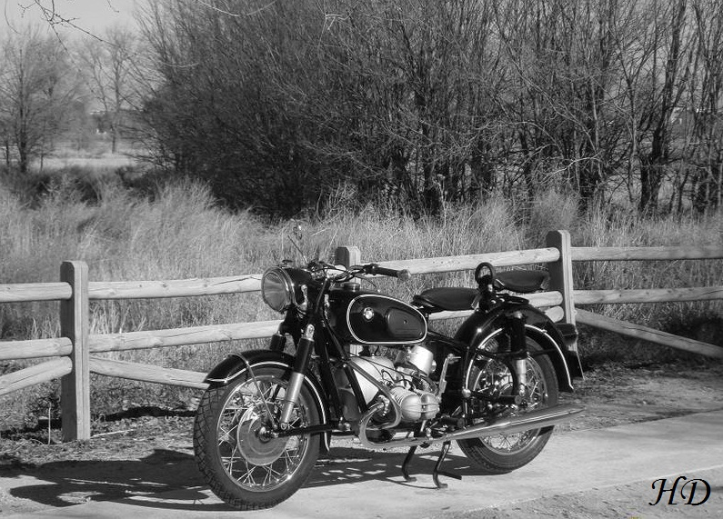

Las motos, como los coches, han sido pilotadas por intrépidos hombres en busca emociones desde que se vendió la primera moto en 1894. La primera carrera en la Isla de Man tuvo lugar unos años más tarde, en 1906. Desde entonces y el final de la Segunda Guerra Mundial, las motocicletas se conducían por carreteras, campos y caminos de tierra en toda Europa. Luego, en 1949, todo se hizo oficial, y el deporte que hoy conocemos y amamos comenzó a tomar forma.
1949: El nacimiento (no oficial) de MotoGP
En 1949, se fundó la Federación Internacional de Motociclismo (FIM).
Organizó lo que serían los primeros campeonatos de 125cc, 250cc, 350cc y 500cc (¡Ah! Y sidecares de 600cc),
en la primera carrera celebrada en el ya famoso circuito TT de la Isla de Man.
El piloto británico y ex piloto de Lancaster Bomber, Leslie Graham,
ganó el primer título de 500cc en una máquina AJS de construcción británica.
Su compatriota, Freddie Frith, ganó el título inaugural de 350cc con una Velocette.

2012 y 2016: Cambios Técnicos
Para la temporada 2012, las máquinas de MotoGP aumentaron su cubicaje a 1.000cc,
lo que ha supuesto el inicio de una nueva era de dominio por parte de los pilotos españoles y
de una nueva rivalidad entre Jorge Lorenzo y Marc Márquez.
En 2016, Michelin sustituyó a Bridgestone como único proveedor de neumáticos,
y los cambios en el hardware y software ayudaron a nivelar la rivalidad entre los distintos equipos.
Ese año, hubo un récord de hasta nueve ganadores diferentes.
Antes de que su rival más joven tomara el control, Jorge Lorenzo ganó los títulos de 2012 y 2015 con Yamaha.
Marc Márquez se ha convertido en el campeón más joven de la historia de MotoGP en 2013,
y afronta la temporada 2019 como el actual campeón, con cinco títulos a su nombre.
Con la entrada de Lorenzo en el equipo oficial Honda, 2019 promete un nuevo
y emocionante capítulo en la evolución del MotoGP.